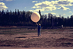
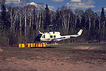
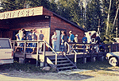

BOREAS Operations was the nerve center of the Southern Study Area. All major actions were coordinated through here, especially scheduling aircraft operations and overflights of sites.
 Location of the SSA within Canada. |
 Location of BOREAS Operations within the SSA. |
 "BOREAS Ops" was located at the Snodrifters Lodge, in Candle Lake, Saskatchewan. | |
| SSA Operations Site also called SSA-999-WLZ02 (click here for detailed info) |
||
| Latitude: 53.733 | UTM Easting: 482409 | BOREAS X: 377.6 |
| Longitude: -105.267 | UTM Northing: 5953885 | BOREAS Y: 319.7 |
| Elevation (ASL): 503 m | UTM Zone: 13 | |
|  Radiosonde balloon launch at Ops |  The NASA Helicopter lands at Ops |
|  A meeting at the Snodrifter's Lodge | |
Related Pages:
 BOREAS Home
BOREAS Home
 Study Region Overview
Study Region Overview
 Southern Study Area (SSA)
Southern Study Area (SSA)
 SSA Operations (SSA-Ops)
SSA Operations (SSA-Ops)
 NSA Operations (NSA-Ops)
NSA Operations (NSA-Ops)
Revison Date: January 25, 1999
{kind=link}
{kind=link}
{kind=link}